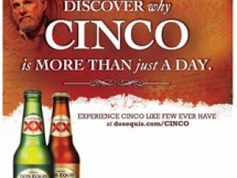
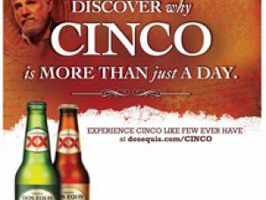

{ ADAM KOST }
brand builder | innovator | strategist | growth hacker | full stack developer


Innovative brand and trade marketer incorporating marketing and advertising strategies and tactics to successfully increase brand awareness, win over consumers, and build loyalty with B2B partners.
Tech-savvy business and market analyst. Identifier of opportunities, trends and consumer insights. Have the ability to convert insights into actionable strategies accross dynamic business channels.
Innovative and resourceful individual brings an entrepreneurial spirit and proven track record of developing + implementing strategic marketing plans which increase business portfolios and profits while securing a competitive market advantage.
Innate leader and talented problem solver driven by continuous self and team improvement. Strives to set new, high-standards for quality, service and organizational goals. Leads by example.


- Annual Guest Speaker at NightClub and Bar Show
- Adjunct Professor
- Program Advisor
- HTML, CSS, JAVASCRIPT, JQUERY, MYSQL, NODEJS, MONGODB, REACT, PHP
- Advisor at Owls Brew
- Advisor at TapHunter Technologies
- Advisor Live Oak Bank
- Co-Captain West Virginia University Mens Rowing Team
- Founder Pi Kappa Alpha West Virginia University

Objective: Stabailize distribution losses within C level accounts in the on-premise.
Key Insight: Losses are coming from the tell-sell departments where service levels are low.
Action: Create a b2b platform that delivers POS, custom menus, and brand education resources.
Result: Engaged with 2,500 customers and delivered over 1.2mm in resources. Distribution losses stablized and volume grew by 4%.


Objective: Create an online destination for domestic and US craft beer in Mexico.
Key Insight: The platform needs to be simple, protect against fraud, and deliver concise content and solutions for an emerging craft market.
Action: Curated the platform with a diverse selection of products, amplified purchase security to minimize fraud, and optomized digital marketing content.
Result: Delivered 1.2mm in revenue over first year of operation.


Objective: Evolve the Halloween drinking occasion into the second largest selling program for the brand.
Key Insight: Consumers are looking for an interesting twist on traditional Halloween celebrations.
Action: Created a 360 campaign that utilized media, packaging, POS, and consumer sweepstakes to drive awareness leading up to Halloween.
Result: Grew the brand 39% versus the prior years selling period. The brand is still running the program.


Objective: Find a way to break thru the Cinco holiday clutter and become the preferred brand for consumers leading into summer.
Key Insight: The selling period is concise compact the single day event. We saw an opportunity to extend the holiday as the customer's emotions are tied to kicking off spring/summer.
Action: The team created a 360 media and retail program that focused on the lead up to Cinco by establishing an additional day "Dos De Mayo" for celebrating.
Result: Outperformed +18% prior year growth with an increase of 30% year over year. We also were awarded a gold Canne Lion advertising prize.


 

Objective: Reposition Strongbow Hard Cider to take advantage of cider trends and the recent acquisition made by Heineken USA.
Key Insight: There was no premium upscale cider in the marketplace that focused on the high-end consumer.
Action: Redesigned a global brand to fit the US market through premiumization of assets, packaging, and positioning.
Result: We nearly double the annual volume of the brand by increasing unit sales by 92% in year one after acquisition.


Objective: Build a bond with bartenders and consumers in intellectual hubs that would lead to the recruitment of new Malibu franchise drinkers.
Key Insight: The target Malibu consumer is looking to celebrate the summer state of mind all year and find ways to express themselves.
Action: Invest in the major markets by hiring a team of young and playful ambassadors that would connect with bartenders, secure features, place POS, and sample consumers all year.
Result: Effected 500 accounts, secured 1,800 features, and sampled 400k + consumers. Volume went from flat growth to +18% in year one of the programs.